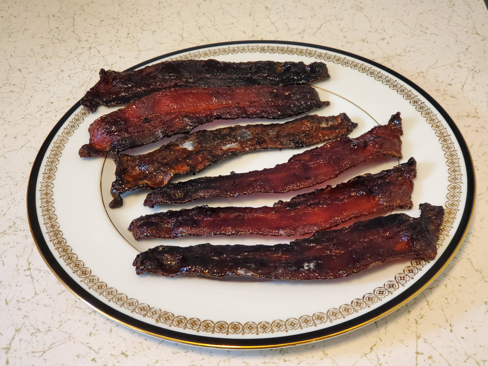

This is a recipe for "Spicy_Maple_Candied_Bacon"

Ingredients
- 0.5 cup of pure maple syrup
- 0.25 cup of light brown sugar
- Optional - 0.5 tsp. of Cayenne Pepper
- One pound of THICK CUT bacon
Directions
- Line a 4-sided baking sheet with Reynolds Wrap NONSTICK Aluminum Foil.
- Put the maple syrup, light brown sugar, and (optional) Cayenne Pepper into a bowl, and using a whisk, mix thoroughly.
- Dip each bacon strip in the above mixture and brush off any excess coating.
- Place the bacon strips onto the baking sheet so that they do not overlap.
- Place the baking sheet on the center rack of your oven and bake at 350° F. for about 30 minutes. (Your actual time will depend on the thickness of the bacon, and how crispy you want it done.)
- Place the bacon strips onto a cooling rack to cool.
- Enjoy.
Download Recipe